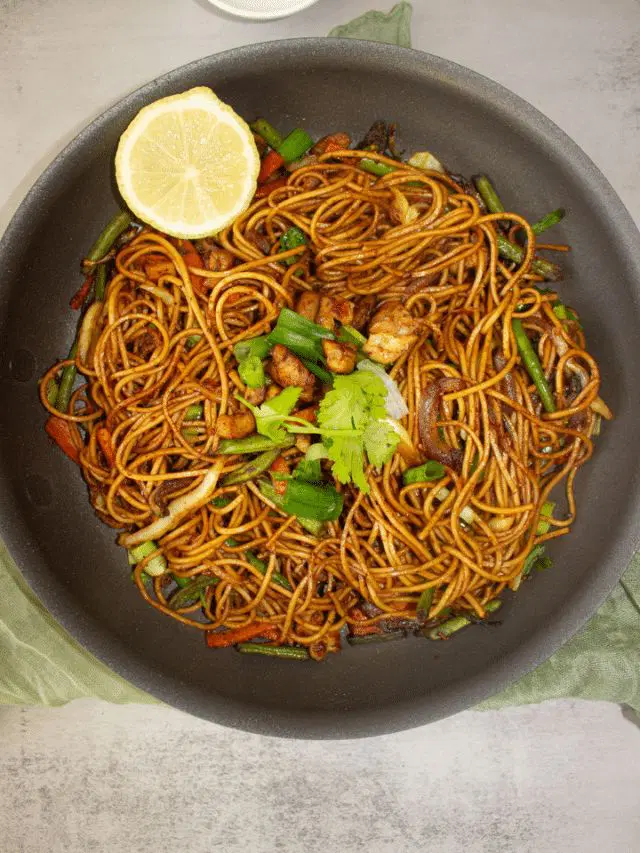
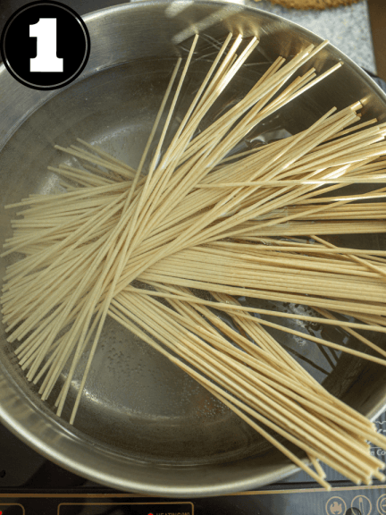
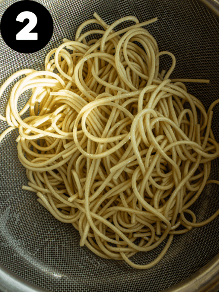
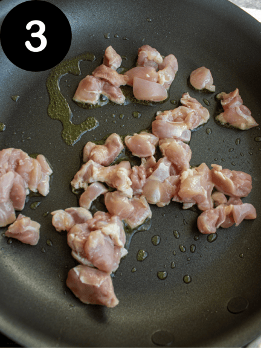
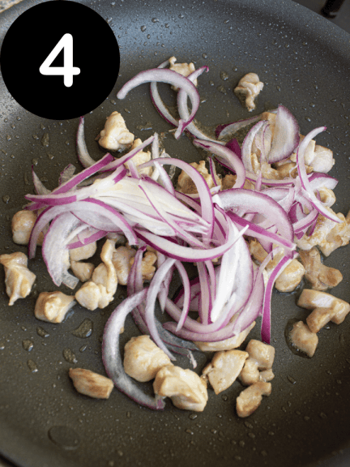
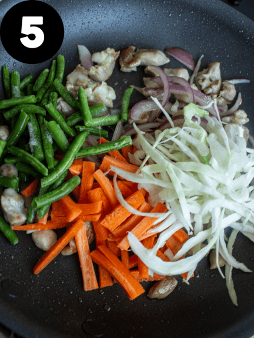
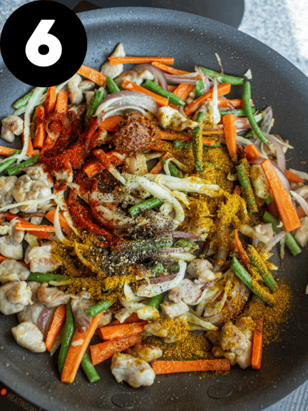
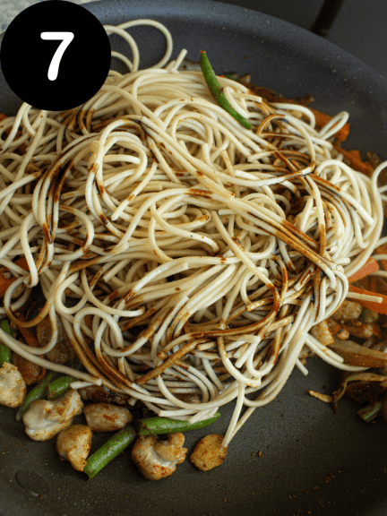
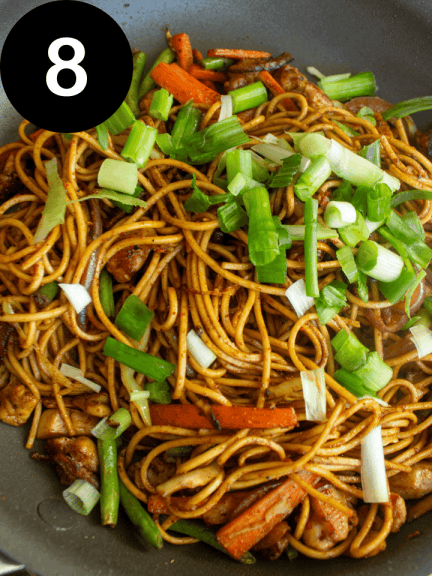

Home
Chowmein

Description
Chowmein is one of the most famous street dishes in Nepal, alongside momo. Nepali chowmein combines the best of local flavors with a touch of Chinese culinary influence.
Ingredients
- 1 Medium Onion Sliced
- 1 Tbsp Pattu Ginger Garlic Paste
- 1/2 Green Capsicum
- 1/4 Cabbage (shredded)
- 2 - 3 Snake Beans (sliced)
- 500g Chicken Breast (if using)
- 2 Tsp Dark Soy Sauce
- 1 Tbsp Thin Soy Sauce
- Frozen Green Chilli chopped (to taste)
- 1 Tsp Shan Cumin Powder
- 1 Tbsp Cooking Oil
Instructions








- Place Noodles in a glass bowl. Pour boiled water over the noodles until well covered, stir for 1 minute and then drain.
- Heat oil in a large frying pan, then stir fry ginger & garlic paste, cumin and onions until aromatic.
- Add dark soy sauce and thin soy sauce, then continue to stir fry for another 30 seconds.
- (if using) stir fry chicken until brown.
- Add carrot, cabbage and green capsicum and stir fry until the vegetables are tender.
- Add the fresh vegetarian stir fry noodles (a little at a time) and toss until well combined.
- Serve immediately.
Serve
Serve with tomato ketchup or ABC Extra Hot Chilli Sauce.